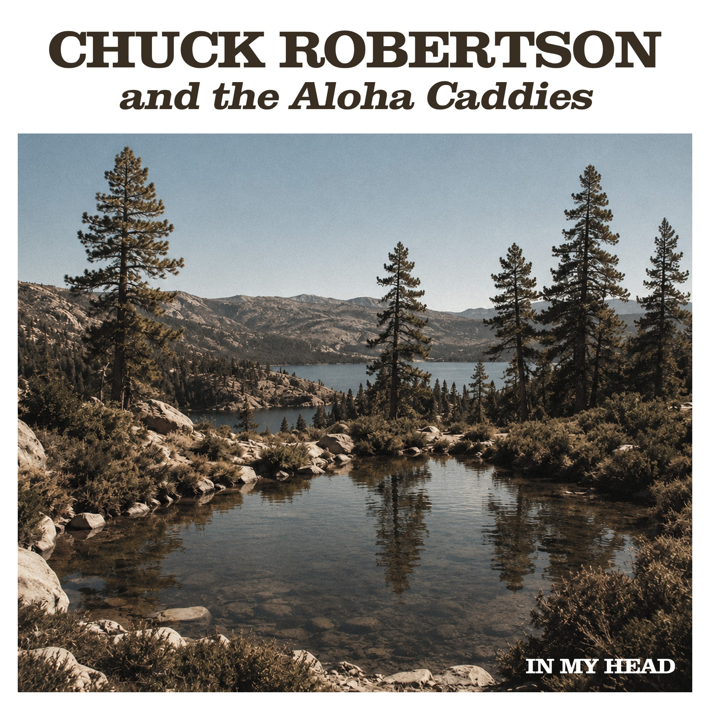

Review
CHUCK ROBERTSON AND THE ALOHA CADDIES - In My Head

Bei Chuck Robertson ist mein Kopf natürlich voreingestellt.
Sobald irgendwo "Caddies" steht, denke ich an Ska, Bläser, Offbeat und Mad Caddies.
Dann startet "In My Head".
Das Intro klingt erstaunlich schön. Kurz hoffe ich, dass die Stimme die Melodie nicht kaputtmacht.
Zum Glück kennt man Chuck.
Man weiß ungefähr, was kommt. Und nein, schlimm wird es nicht.
Trotzdem wird schnell klar, dass Chuck Robertson and the Aloha Caddies kein kleiner Ableger der Mad Caddies sind. Chuck hört man natürlich sofort heraus. Seine Stimme lässt sich schwer übersehen, beziehungsweise überhören.
Der Rest klingt aber deutlich anders.
Erwachsener. Breiter. Technisch ausgefeilter.
Ich habe die ganze Zeit versucht, das Projekt irgendwo einzuordnen, und bin ausgerechnet bei den Foo Fighters gelandet. Nicht, weil der Song wie eine Kopie klingt. Eher wegen dieser klaren Rockkante und der Art, wie Melodie und Druck zusammenkommen.
Der Pressetext erzählt von Chucks früherem Projekt Chuck Robertson and friends, dem Album All out of Dreams und dem tragischen Verlust eines Bandmitglieds. Das Album soll neu veröffentlicht werden, dazu ist für 2027 weitere Musik angekündigt. Unter dem neuen Namen Chuck Robertson and the Aloha Caddies beginnt nun offenbar das nächste Kapitel.
"In My Head" steht dabei ziemlich weit weg vom üblichen Mad-Caddies-Sound.
Der Song klingt nicht nach Nebenprojekt, das nur den bekannten Namen mitnimmt. Er wirkt eigenständig und deutlich ruhiger, ohne langweilig zu werden.
Und wenn man zwischendurch mal eine Pause vom Knüppelpunk braucht, liegt man hier ziemlich richtig.